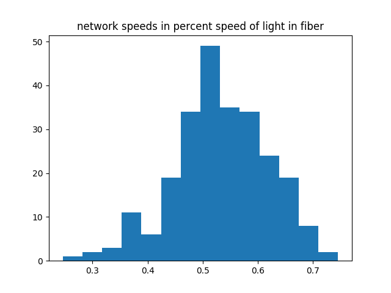

A few weeks ago, someone mentioned to me that when you send a packet over the internet, it travels at a significant fraction (~80%) of the speed of light, just based on the time it takes to get a response and the physical distance travelled. This was surprising to me, but it was believable enough for me to spend some time investigating it.
We can get a pretty good estimate of the speed that the packet is traveling at by pinging a server and doing some math:
$ ping wesleyac.com
PING wesleyac.com (192.64.119.124) 56(84) bytes of data.
64 bytes from 192.64.119.124 (192.64.119.124): icmp_seq=1 ttl=50 time=80.1 ms
This server is located in LA, and I'm in NYC, putting the distance at 3965 km (7930 km for a round trip). That gives us a speed of just over 99000 km/second. We can find the speed of light in fiber optic cable1 by dividing the speed of light in a vacuum (299,792,458 m/s) by the refractive index of fiber optic cable (usually ~1.468)2, getting ~204,218,296 m/s. Thus when I ping my server, I'd estimate that on average the packet is travelling at around 48% of the speed of light in fiber optic cable. This is quite impressive (It's about 22 million times faster than the Pony Express, for example3), but it's not the ~80% figure that I'd heard, so I decided to investigate further.
One thing that might be happening is that my packet isn't actually going directly from NYC to LA - I can use traceroute to find the exact path that it's taking:
$ traceroute wesleyac.com
traceroute to wesleyac.com (192.64.119.124), 30 hops max, 60 byte packets
1 gateway.net.recurse.com (10.0.0.1) 2.943 ms 2.850 ms 2.866 ms
2 207.251.103.45 (207.251.103.45) 37.430 ms 37.652 ms 37.576 ms
3 te0-7-0-18.ccr21.jfk04.atlas.cogentco.com (38.104.73.241) 3.932 ms 3.794 ms 3.790 ms
4 telia.jfk04.atlas.cogentco.com (154.54.11.110) 4.245 ms 4.241 ms 4.158 ms
5 nyk-bb3-link.telia.net (62.115.140.210) 3.719 ms nyk-bb3-link.telia.net (62.115.140.106) 3.767 ms nyk-bb3-link.telia.net (62.115.123.6) 3.787 ms
6 las-b24-link.telia.net (62.115.116.96) 85.758 ms las-b24-link.telia.net (62.115.138.101) 82.792 ms las-b24-link.telia.net (62.115.116.96) 83.911 ms
7 incapsula-ic-306837-las-b3.c.telia.net (62.115.45.234) 80.535 ms 80.515 ms 80.482 ms
8 172.20.0.198 (172.20.0.198) 80.534 ms 81.517 ms 80.691 ms
9 199.193.7.150 (199.193.7.150) 80.616 ms 81.551 ms 81.491 ms
10 199.193.7.162 (199.193.7.162) 82.897 ms 82.538 ms 81.855 ms
11 192.64.119.124 (192.64.119.124) 80.515 ms 81.523 ms 81.671 ms
Doing this, I can see that while the majority of the hops are fairly short, most of the time is taken up between hops 5 and 6, which are when it actually goes from the east coast to the west coast. For a while, I toyed with the idea of geolocating each hop, and finding the total distance travelled that way. However, there's a much easier way to find the latency between two hops - AT&T has a webpage that shows the latency between almost any of it's nodes. The LA to NY latency as of this writing is 63 ms, which works out to ~62% of the speed of light in fiber.
We can use a simple script to calculate the latencies for all of these:
| ________________________ | Atl | Aus | Cam | Chi | Cle | Dal | Den | Det | Hou | Ind | Kan | LA | Mad | Nas | NO | NY | Orl | Pa | Phx | SA | SD | SF | StL | Sea |
|---|---|---|---|---|---|---|---|---|---|---|---|---|---|---|---|---|---|---|---|---|---|---|---|---|
| Austin, TX | 105.2 | |||||||||||||||||||||||
| Cambridge, MA | 107.6 | 106.8 | ||||||||||||||||||||||
| Chicago, IL | 81.9 | 94.9 | ||||||||||||||||||||||
| Cleveland, OH | 93.7 | 97.8 | 143.5 | |||||||||||||||||||||
| Dallas, TX | 115.4 | 97.1 | 103.7 | 98.9 | 113.5 | |||||||||||||||||||
| Denver, CO | 97.0 | 102.7 | 126.0 | 154.5 | 111.8 | |||||||||||||||||||
| Detroit, MI | 87.6 | 98.5 | 89.7 | 95.8 | 77.5 | 94.4 | 142.1 | |||||||||||||||||
| Houston, TX | 125.4 | 67.6 | 103.2 | 91.3 | 105.4 | 119.6 | 117.2 | 91.2 | ||||||||||||||||
| Indianapolis, IN | 104.9 | |||||||||||||||||||||||
| Kansas City, MO | 125.3 | 109.2 | 118.2 | 118.9 | 108.6 | 138.6 | ||||||||||||||||||
| Los Angeles, CA | 125.2 | 113.6 | 121.4 | 122.6 | 127.5 | 130.0 | 100.9 | 123.2 | 123.5 | |||||||||||||||
| Madison, WI | 79.8 | 68.3 | ||||||||||||||||||||||
| Nashville, TN | 114.3 | 100.9 | 104.4 | 74.6 | 134.0 | 110.0 | 102.3 | 101.3 | 93.1 | 89.4 | 122.6 | |||||||||||||
| New Orleans, LA | 123.5 | 106.0 | 103.9 | 78.5 | 89.8 | 111.8 | 100.7 | 147.1 | 99.6 | 125.9 | 75.2 | |||||||||||||
| New York, NY | 100.3 | 97.5 | 100.9 | 122.0 | 101.0 | 102.8 | 138.0 | 75.1 | 114.3 | 135.9 | 123.9 | 106.6 | 117.5 | |||||||||||
| Orlando, FL | 129.7 | 114.3 | 94.4 | 90.4 | 110.5 | 119.0 | 110.6 | 96.6 | 124.5 | 99.4 | 129.4 | 123.5 | 122.8 | 94.2 | ||||||||||
| Philadelphia, PA | 98.0 | 102.9 | 106.6 | 126.5 | 104.8 | 107.3 | 140.7 | 102.5 | 110.9 | 133.5 | 124.9 | 105.3 | 106.4 | 83.3 | 93.0 | |||||||||
| Phoenix, AZ | 142.2 | 127.4 | 117.2 | 101.2 | 117.1 | 150.6 | 50.9 | 104.3 | 142.3 | 116.3 | 106.8 | 122.4 | 136.7 | 132.1 | 113.5 | |||||||||
| San Antonio, TX | 109.1 | 79.1 | 103.2 | 102.0 | 112.3 | 101.0 | 98.5 | 97.1 | 122.3 | 133.1 | 134.3 | 106.0 | 136.8 | 106.3 | 128.6 | 103.4 | 143.7 | |||||||
| San Diego, CA | 135.0 | 128.2 | 116.8 | 115.8 | 118.8 | 141.1 | 89.5 | 115.0 | 135.1 | 110.1 | 89.3 | 124.5 | 132.7 | 118.6 | 129.9 | 119.2 | 119.5 | 139.3 | ||||||
| San Francisco, CA | 120.8 | 102.8 | 124.1 | 132.9 | 137.0 | 113.9 | 102.7 | 131.9 | 115.0 | 110.4 | 103.6 | 114.9 | 129.6 | 117.4 | 127.0 | 104.4 | 122.7 | 112.4 | ||||||
| St. Louis, MO | 75.2 | 100.2 | 123.6 | 119.1 | 113.6 | 87.5 | 120.9 | 97.8 | 94.7 | 62.8 | 126.1 | 107.1 | 83.1 | 68.4 | 60.0 | 128.6 | 102.9 | 131.0 | 104.6 | 97.7 | 119.4 | 114.6 | ||
| Seattle, WA | 104.8 | 98.2 | 114.5 | 136.4 | 123.2 | 104.2 | 97.1 | 129.8 | 106.7 | 99.0 | 106.7 | 104.2 | 105.7 | 119.5 | 103.9 | 119.7 | 91.4 | 97.3 | 106.3 | 104.6 | ||||
| Washington DC | 92.2 | 103.5 | 114.7 | 91.7 | 75.3 | 102.9 | 133.0 | 75.7 | 109.2 | 137.8 | 112.7 | 73.1 | 110.8 | 131.3 | 87.0 | 101.4 | 115.9 | 99.3 | 112.5 | 119.1 | 135.2 | 113.6 |
Interestingly, the fastest one of these is Denver to Chicago, which goes at 154.5 km/ms, or ~76% the speed of light in fiber! This is approximately the same speed as SF to Hong Kong, which is quite surprising - I would expect SF to Hong Kong to be much faster than Denver to Chicago, since a larger percentage of the time would be spent travelling over fiber.
Overall, the thing that surprised me the most about this was how consistent the timing was:

I now have a much better intuition for how fast packets travel, and I hope that this was enlightening for others as well!
Thanks to Christian Ternus, Dan Luu, and Laura Lindzey for comments/feedback/discussion.
-
As an aside - when I was researching the speed of light in fiber optic cable, I discovered that the speed of manufacture of fiber optic cable is more than 50 meters per second, which is both terrifying and awe inspiring. For context, that's faster than the world record fastest baseball pitch. ↩
-
Based on these datasheets ↩
-
This is based on the fastest Pony Express delivery ever, which was a delivery from St. Joseph, MI to Sacramento, CA in 7 days and 17 hours - on average, deliveries were probably much slower. ↩